- Pelamos el limón y abrimos la vaina de vainilla. Introducimos en una olla la leche, vainilla, canela, y limón. Llevamos a ebullición y en cuanto hierva apartamos del fuego. Dejamos reposar 20min, que se mezclen los sabores.
- Mezclamos las yemas con el azúcar y batimos con unas varillas. Añadimos la maizena y batimos bien. Echamos poco a poco la leche previamente colada mientras que mezclamos con las varillas.
- Ponemos a calentar el recipiente al baño maría: Ponemos agua a hervir en una olla (la maizena empezará a espesar justo antes de le ebullición, a unos 90 grados) y vamos removiendo hasta que espese. Recordar que en caliente la mezcla es más líquida.
- Ponemos en cuencos y colocamos una galleta María encima. Metemos en la nevera y comemos en frío.
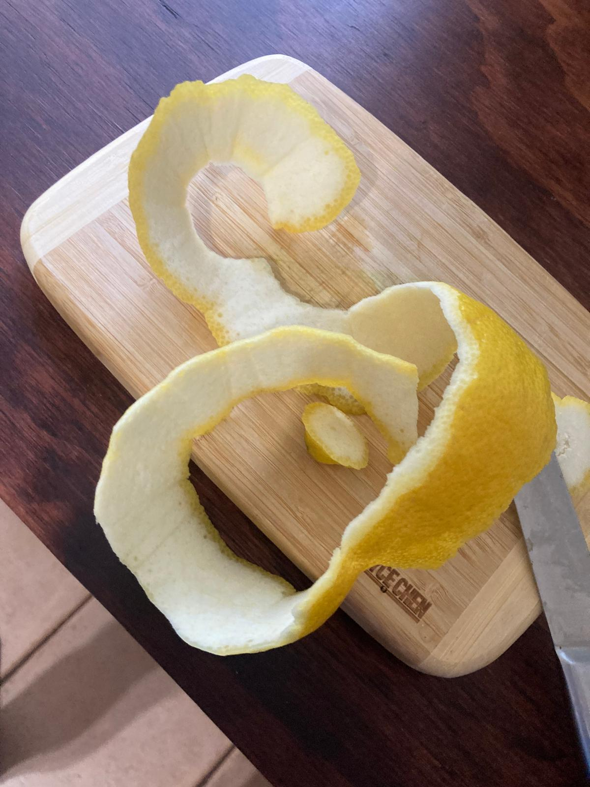
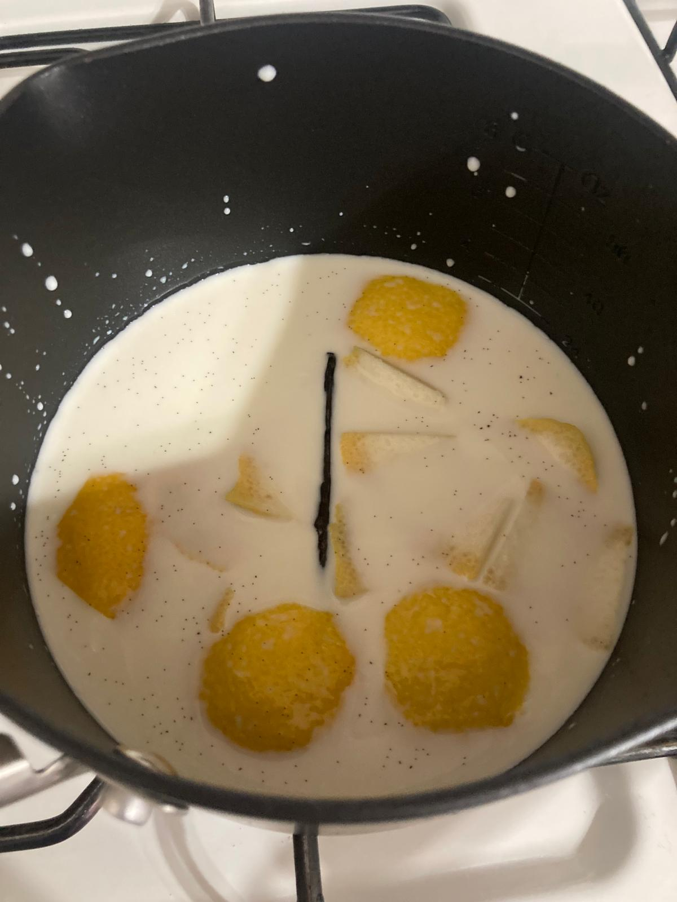
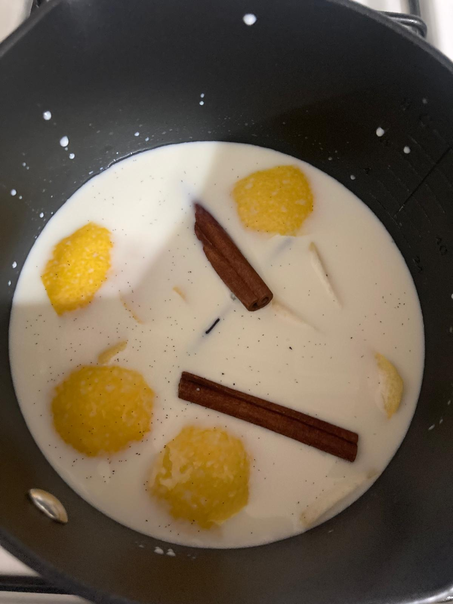
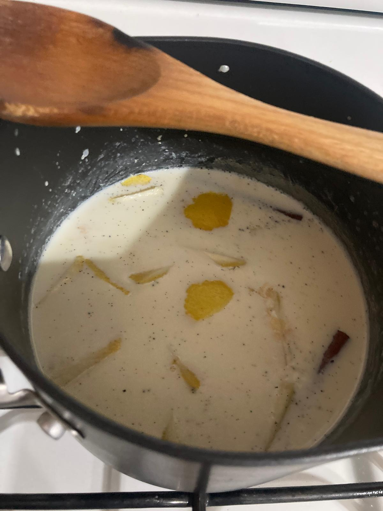
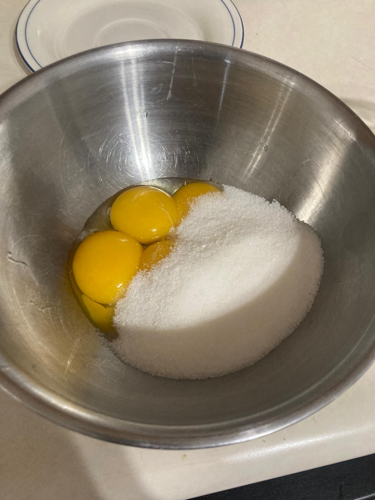
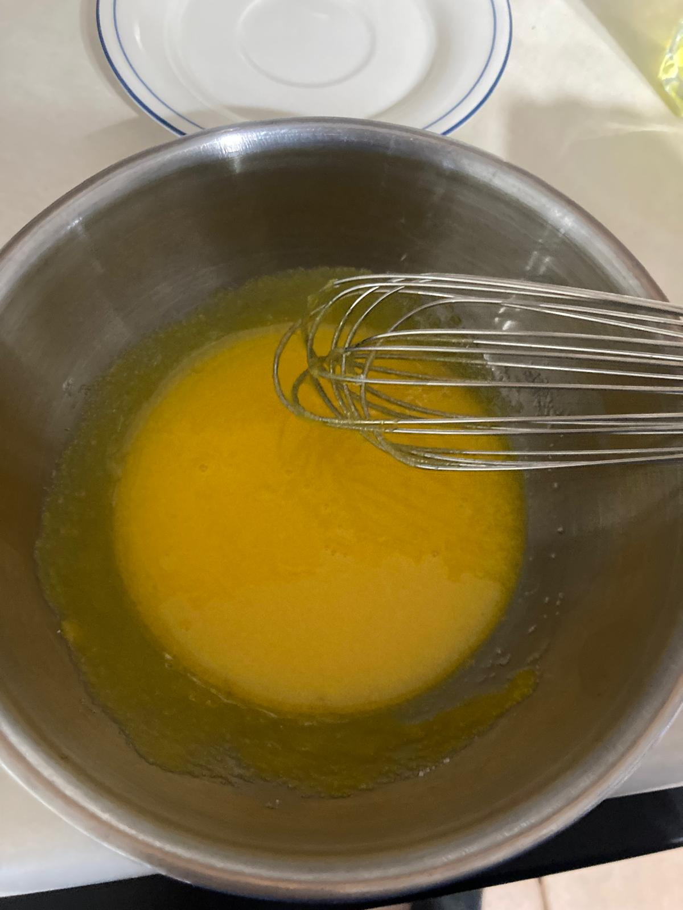
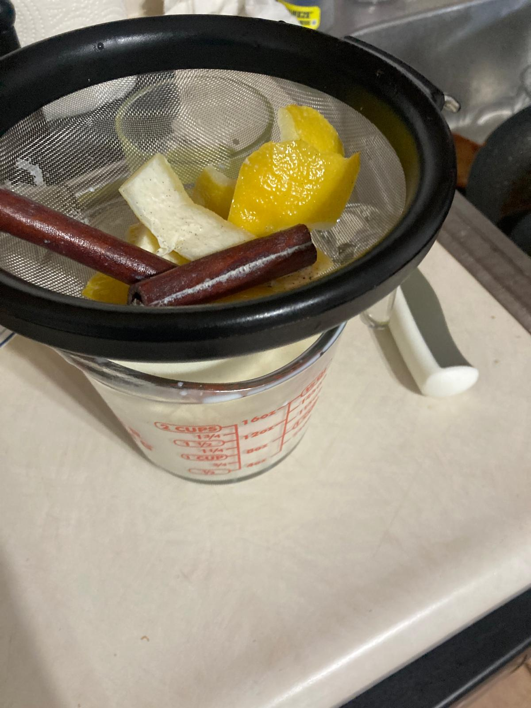
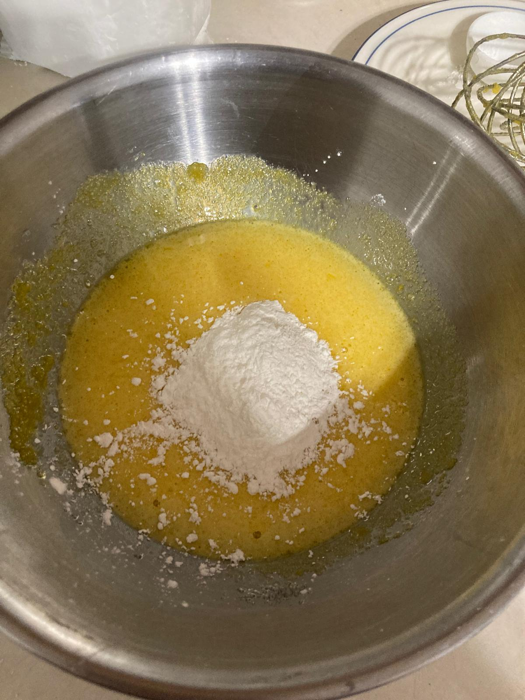
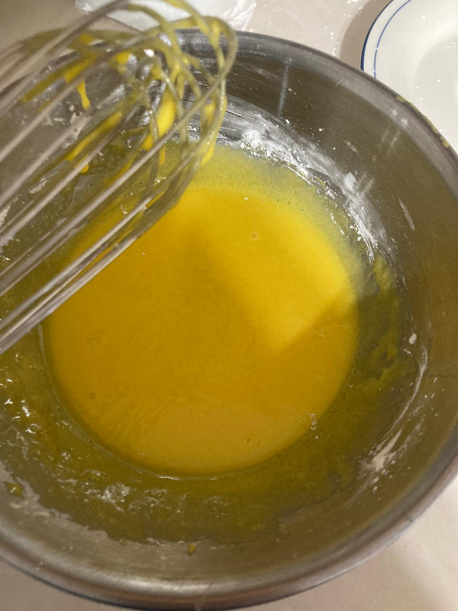
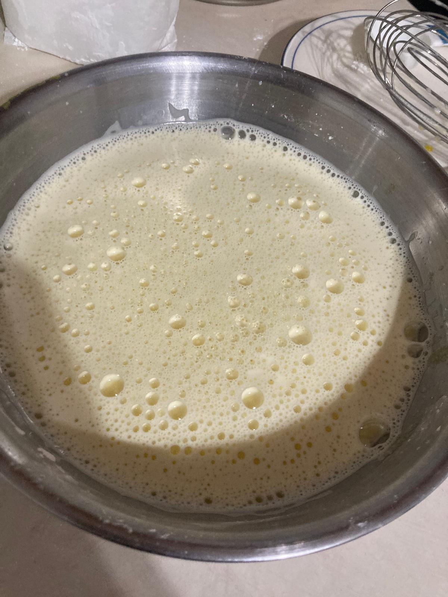
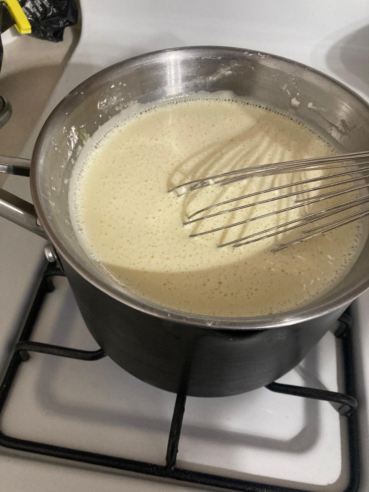
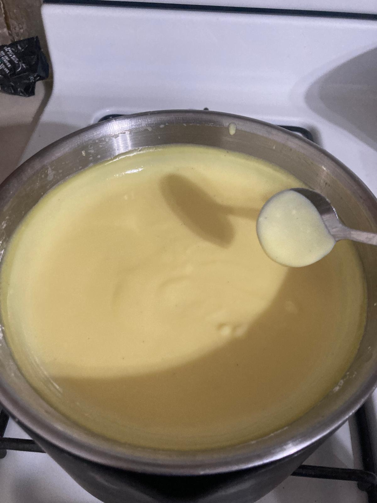
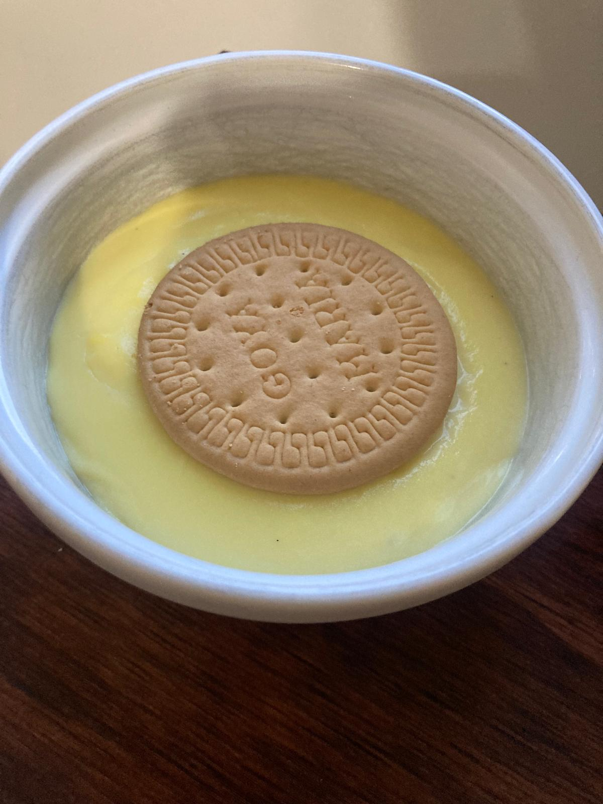
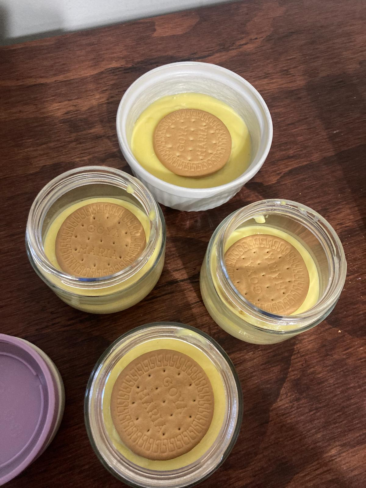